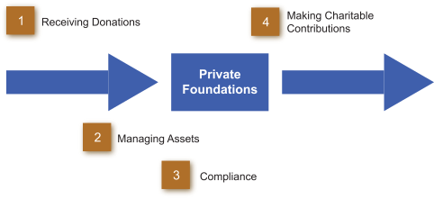

A private foundation is classified as an Internal Revenue Code 501(c) 3 entity, which qualifies it as a tax-exempt charity funded and controlled by one or more individuals or a family. The purpose for developing these entities can be varied, but the common denominator is the desire of an individual or family to utilize a portion of their wealth to fulfill their intent to better the world relative to specific issues to which they are committed. Most foundations function as general-purpose endowment funds that the families use to make their charitable contributions.
The basic activity of a private foundation is simple, consisting of four elements. Move your mouse pointer in numerical sequence to each numbered bullet to learn more.
